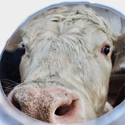

Febrero 28, 2018

los animales también sienten
No son insensibles al dolor. Los animales sienten y padecen y hasta experimentan comportamientos y reacciones análogas a la pena o el placer. Realidades constatadas desde hace tiempo que han llevado a que el derecho tenga en cuenta y regule el uso de animales (vertebrados, fundamentalmente) en la experimentación científica o considere y trate de limitar su padecimiento en el ámbito de la explotación industrial. Sin embargo, los avances en este campo muestran que el dolor toca a una variedad más amplia de especies animales además de a los vertebrados. Y que todavía queda por hacer en la transposición jurídica del «derecho de los animales». Empezando por que se apliquen con menos timidez los textos legales vigentes o se defina con mayor claridad la sensibilidad animal al dolor. Ese es uno de los principales caballos de batalla de la Fundación francesa LFDA, «Derecho animal, ética y ciencia», y de las recientes jornadas celebradas en París en donde por primera vez y de manera multidisciplinar se abordó esta cuestión y el dilema ético entre el derecho del hombre a saber y experimentar y los derechos de los animales. Una de las principales conclusiones –apoyada por varios estudios– de este coloquio que reunió a neurobiólogos, etólogos y veterinarios, pero también sociólogos y juristas, es que la sensibilidad al dolor afecta a muchas y diversas especies.
A día de hoy el derecho europeo no es ajeno y varios textos precisan los límites legales de estas experimentaciones en laboratorio pero como afirma Georges Chapouthier, neurobiólogo del CNRS galo (Centro Nacional de Investigaciones Científicas) y filósofo, «en materia de moral práctica, las soluciones jurídicas propuestas, por muy necesarias que puedan ser, no son, frente a cuestiones filosóficas de fondo, más que respuestas arbitrarias y parciales». Si a nadie escapa que la experimentación animal es indispensable para la salvaguarda y protección de la salud de millones de vidas humanas y también animales, desde su creación la LFDA milita por el desarrollo de protocolos alternativos que reemplacen test y pruebas de toxicidad y contribuyan, además, a reducir el número de animales utilizados. En Francia, se emplean cerca de 2,5 millones de ejemplares de laboratorio, principalmente para la medicina humana y veterinaria, la investigación y el desarrollo y la investigación llamada «fundamental», que abarca distintas disciplinas de la biología. Leer Más
Febrero 28, 2018
7 FORMAS EN LAS QUE SER VEGANO AYUDA A SALVAR AL PLANETA
Las industrias de la carne, los productos lácteos y los huevos contribuyen enormemente al cambio climático y a otros problemas ambientales. Mira estas cuestiones y aprende sobre cómo ser vegano puede ayudar a salvar el mundo:
1. Excremento y orina
Los animales en las granjas en E.E.U.U. producen 10 veces más excrementos que toda la población humana del país. Todo eso tiene que ir a algún lugar, y por lo general termina en áreas con superficies de agua, conocidas como lagunas, que con el tiempo desembocan en ríos y lagos.
2. Eructos y pedos
Los animales usados para el consumo liberan enormes cantidades de metano cuando eructan y se pedorrean. El metano es 20 veces más eficaz para atrapar el calor en la atmósfera que el dióxido de carbono. Al volverte vegano estarás ayudando a prevenir que este metano termine en la atmósfera, una de las principales causas del cambio climático.
3. Óxido nitroso
Según las Naciones Unidas, las industrias de la carne, de los huevos y de los productos lácteos son responsables del 65% de las emisiones de óxido nitroso del mundo. El óxido nitroso es 300 veces más potente como gas de cambio climático que el dióxido de carbono. Ser vegano reduce tu huella de nitrógeno.
4. Selvas tropicales
Un porcentaje enorme de las selvas tropicales del mundo han sido taladas para cultivar la soya que se utiliza para alimentar a los animales de granja. Si simplemente comiéramos la soya y otros alimentos vegetales nosotros mismos, en lugar de dárselos primero a los animales de granja, no necesitaríamos cultivar tantas cosechas —y así podríamos dejar de diezmar las selvas tropicales.
5. Energía
Se necesita más de 11 veces la cantidad de combustible fósil para producir 1 caloría de proteína animal de la que se necesita para producir 1 caloría de proteína vegetal. La producción de carne y de otros productos animales requiere una cantidad enorme de energía —de modo que al volverte vegano ayudarás a detener el cambio climático.
6. Agua
Se necesitan más de 2,400 galones de agua para producir 1 libra de carne, mientras que cultivar 1 libra de trigo requiere solamente 25 galones de agua.
7. El hambre en el mundo
Toda la tierra del mundo que se utiliza para la ganadería se podría usar para terminar con el hambre en el mundo —lo que quiere decir que si elimináramos la ganadería y en su lugar utilizáramos la tierra para cultivar cosechas, tendríamos suficiente comida para alimentar a todo el mundo.
EL RESULTADO FINAL
Puedes fácilmente reducir tu huella de carbono y ayudar a salvar el medio ambiente evitando los productos animales, así que ¡mejor cómete esos vegetales!
Todos tenemos la oportunidad de hacer una diferencia cada día a través de las decisiones que tomamos. Si suficientes personas adoptan costumbres más conscientes todavía podemos salvar a nuestro planeta. ¡Cada persona cuenta!